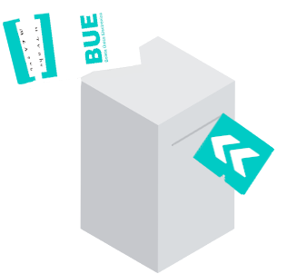

Elecciones Provinciales, Municipales y Comunales
25 de junio de 2023
Tribunal Electoral Provincial
Instructivo para el uso del Sistema de Boleta Única Electrónica (BUE)
Simulador del Sistema de Boleta Única Electrónica (BUE)
Comenzar
Descargar desde
Google Play Store
La Autoridad de Mesa le entregará una boleta en blanco y retirará ante Usted el primer troquel.
Continuar
Coloque la boleta en la ranura en el sentido que indica la flecha.
Continuar
Para iniciar el simulador seleccione el departamento en la que vota:
COSQUIN (CIRC. 150)
LA FALDA (CIRC. 154)
MARCOS JUAREZ (CIRC. 133)
VILLA CARLOS PAZ
La máquina imprimirá su elección. Compruebe que el texto es correcto acercando la boleta al verificador.
Continuar
Regrese a la mesa con la boleta plegada por la línea de puntos para preservar el secreto de su selección.
Continuar

Frente a la Autoridad de Mesa corte el segundo troquel y entréguelo. Por último, introduzca la boleta en la urna para emitir su voto.
Continuar
Gracias por utilizar el simulador del Sistema de Boleta Única Electrónica (BUE)
Reiniciar
Para iniciar el simulador seleccione el departamento en la que vota:
COSQUIN (CIRC. 150)
LA FALDA (CIRC. 154)
MARCOS JUAREZ (CIRC. 133)
VILLA CARLOS PAZ
Continuar